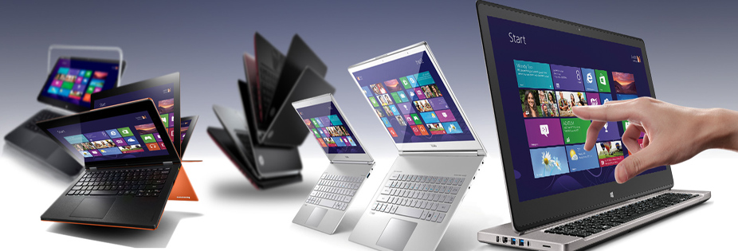

Bilgisayar Nedir? Ne İşe Yarar?
Bilgisayar nedir sorunsuna vereceğimiz cevap ise bilgisayar, çok sayıda aritmetik ve mantıksal işlemler yapabilen, yaptığı işlemleri saklayabilen ve istenildiği zaman kullanıcıya sunabilen teknolojik bir cihazdır.
İlk üretildiklerinde neredeyse bir oda büyüklüğünde olan bilgisayarlar, teknolojinin gelişmesiyle birlikte oldukça küçük boyutlara düşürülmüştür. Gün geçtikçe kullanımı
yaygınlaşan bu elektronik cihaz sayesinde birçok ihtiyaç karşılanabilir. Ödev yapma, film izleme, müzik dinleme, oyun oynama gibi günlük ihtiyaçlar dışında grafik tasarımı,
web yazılımı ve haberleşme gibi birçok alanda bilgisayarlardan faydalanılabilir.
Standart bir masaüstü bilgisayarı oluşturan temel donanım bileşenleri kasa, monitör, klavye ve mouse(fare)'dur.
bunların yanında yazıcı, webcam, hoparlör gibi bazı donanım birimleri de kullanılabilir.
Bilgisayar Donanım Bileşenleri
Kasa, monitör, klavye ve mouse bir bilgisayarı oluşturan temel bileşenlerdir. Bilgisayarın çalışabilmesi için ise kasa içerisinde birçok donanım(hardware) yer almaktadır. Bu donanımlar şu şekildedir:
- Anakart
- Ram
- Ekran Kartı
- İşlemci
- Sabit Disk
Donanımın kullanıcı ile etkileşime geçebilmesi için yazılımlara ihtiyaç vardır. Bir bilgisayarın çalışabilmesi için gerekli olan temel yazılım(software) işletim sistemi olarak adlandırılır.
Bilgisayarın Çalışma Yapısı
Bilgisayarın çalışma yapısı bilgi girişi, bilginin saklanması, bilginin işlenmesi ve bilginin çıkışı olarak 4 ana başlıkta toplanır.
Bilgi Girişi: Bilgisayara işlenmesi için klavye,fare,tarayıcı vb. donanım birimleri sayesinde veri girme işlemidir.
Bilginin Saklanması: Kullanıcı tarafından girilen bilgiler, yüklenen dosyalar bilgisayarın harddisk adlı donanım birimine kaydedilir.
Bilginin İşlenmesi: Giriş birimleri sayesinde girilen bilgiler CPU(işlemci) sayesinde işlenerek çıkış birimlerine aktarılır.
Bilginin Çıkışı: Girilen bilgiler kullanıcı istediği zaman işlemci tarafından işlenir ve monitör, yazıcı vb. çıkış birimlerine aktarılarak kullanıcının veriye ulaşması sağlanır.